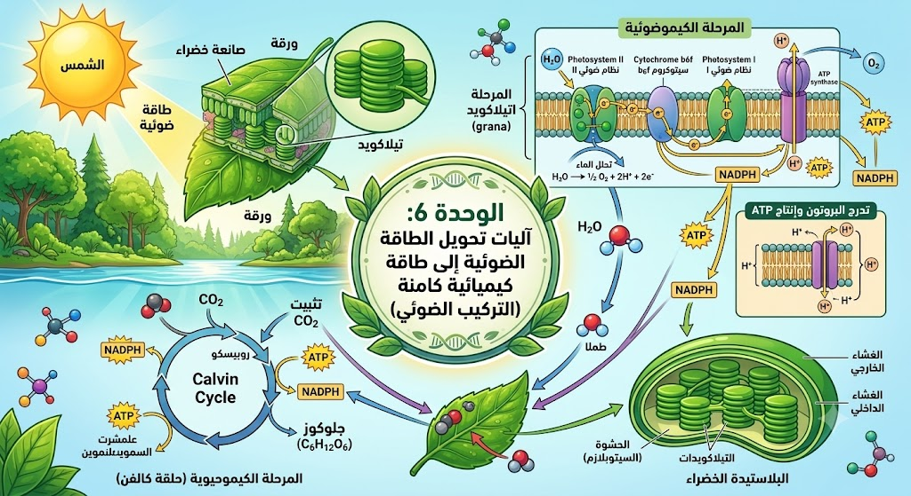
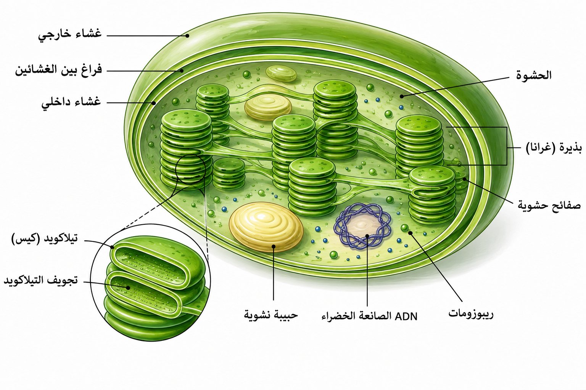
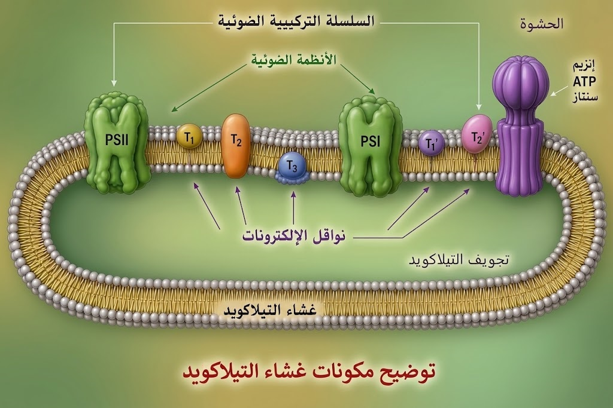
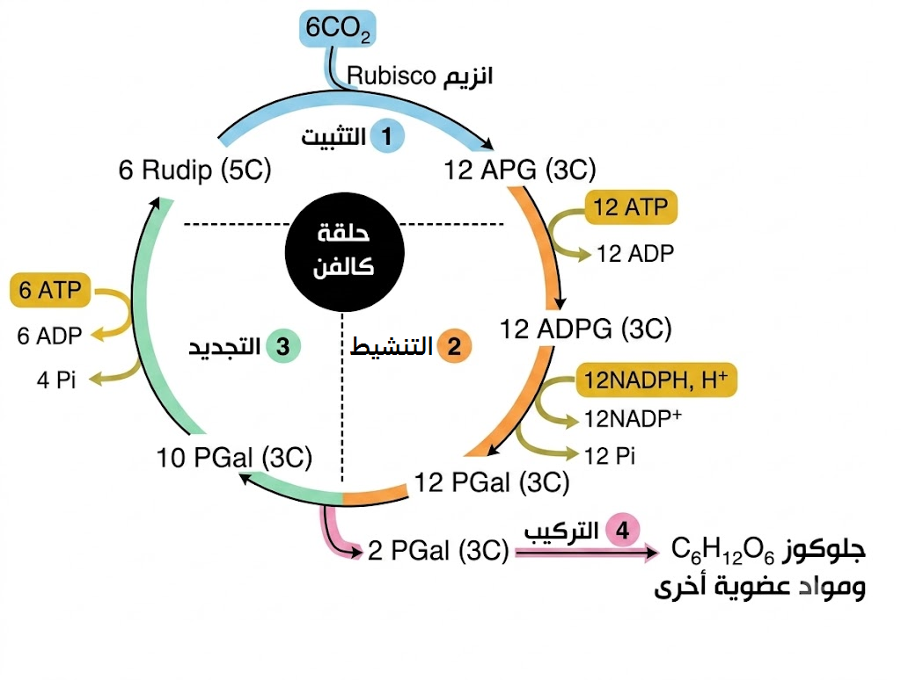

الوحدة 6: آليات تحويل الطاقة الضوئية إلى طاقة كيميائية كامنة (التركيب الضوئي)
1 تعريف التركيب الضوئي
هو عملية حيويّة أساسية تتم من طرف النباتات الخضراء وبعض أنواع البكتيريا. يتم خلالها تحويل الطاقة الضوئية بواسطة الصباغ اليخضورية إلى طاقة كيميائية كامنة مخزنة في جزيئات المادة العضوية (مثل السكريات)، وذلك انطلاقاً من مواد معدنية بسيطة تتمثل في غاز ثنائي أكسيد الكربون (CO₂) وماء (H₂O)، مع طرح غاز ثنائي الأكسجين (O₂) في الوسط.
2 بنية الصانعة الخضراء وتدرج الحجيرات الوظيفي
أ. الغلاف المزدوج والفضاء بين الغشائي:
تتميز الصانعة الخضراء بكونها عضية خلوية ضخمة محاطة بغلاف يتكون من غشائين؛ خارجي يسمح بمرور الجزيئات الصغيرة وداخلي يتميز بنفاذية اختيارية عالية. يحصر هذان الغشاءان بينهما فضاءً ضيقاً يسمى الفضاء بين الغشائي، ويعمل هذا الغلاف المزدوج كدرع حماية وكحاجز فيزيائي ينظم عمليات التبادل الطاقوي والمادي بين الصانعة وهيولى الخلية النباتية، مما يضمن استقلالية التفاعلات الحيوية بالداخل.
ب. نظام التيلاكويدات والتركيب الحجيري:
يمتد الغشاء الداخلي ليشكل جملة من الأكياس المسطحة المتراصة فوق بعضها كقطع النقد تسمى التيلاكويدات، والتي تنتظم في مجموعات تسمى الغرانا (Grana). هذا التركيب الفريد يوفر مساحة سطح هائلة مدمج فيها الأصباغ والبروتينات، مما يسمح باقتناص أكبر قدر ممكن من الفوتونات الضوئية، ويمثل تجويف التيلاكويد حجرة منفصلة كيميائياً تساهم في خلق تدرج البروتونات الضروري لتركيب الطاقة.
ج. الحشوة (الستروما) والوسط المائي:
تملأ الحشوة الفراغ الداخلي للصانعة، وهي عبارة عن سائل هلامي كثيف غني جداً بالإنزيمات النوعية (مثل الروبيسكو) والـ DNA والريبوزومات الخاصة بالصانعة. توفر الحشوة الوسط المائي الملائم لحدوث التفاعلات الكيموحيوية التي لا تتطلب الضوء بشكل مباشر، حيث يتم فيها تثبيت الكربون وتحويله إلى سكريات أولية، كما تعمل كمخزن مؤقت لنواتج المرحلة الضوئية قبل استهلاكها في دورة كالفن.

3 التركيب الجزيئي لغشاء التيلاكويد
أ. الأنظمة الضوئية:
- PS II (P680): مدمج في غشاء التيلاكويد.
- PS I (P700): مدمج في غشاء التيلاكويد.
ب. النواقل الإلكترونات :
- T₁ : داخل الطبقة المضاعفة لغشاء التيلاكويد (متحرك).
- T₂ : مدمج يخترق غشاء التيلاكويد.
- T₃ : في تجويف التيلاكويد (السطح الداخلي للغشاء).
- T'₁ : في الحشوة (على السطح الخارجي للغشاء).
- T'₂ : مدمج على السطح الخارجي للغشاء (جهة الحشوة).
ج. الكرية المذنبة:
- إنزيم ATP Synthase: يخترق غشاء التيلاكويد (القاعدة F₀ في الغشاء، والرأس F₁ يتجه نحو الحشوة).

• تتكون السلسلة التركيبية الضوئية من :
• PSII → T1 → T2 → T3 → PSI → T'1 → T'2
4 أطياف الامتصاص وأطياف النشاط للأصباغ اليخضورية
أ. طيف الامتصاص (يخضور أ وب):
يمثل كمية الضوء الممتصة من طرف يخضور (أ) ويخضور (ب) حسب الأطوال الموجية. يمتص اليخضور الضوء بكفاءة عالية في منطقتي اللون الأزرق والأحمر.
ب. طيف النشاط للتركيب الضوئي:
يمثل شدة عملية التركيب الضوئي (المقاسة بطرح O₂ أو امتصاص CO₂) بدلالة الأطوال الموجية للضوء المستعمل.
ج. الاستنتاج (العلاقة بين الطيفين):
يوجد تطابق بين منحنى طيف الامتصاص لليخضور ومنحنى طيف النشاط، مما يدل على أن الأصباغ اليخضورية (أ وب) هي المسؤولة الأساسية عن امتصاص الطاقة الضوئية المحفزة لتفاعلات التركيب الضوئي.
5 بنية وتخصص النظام الضوئي (Photosystem)
أ. البنية الجزيئية والمعقد البروتيني للنظام الضوئي:
يُعتبر النظام الضوئي معقداً بروتينياً ضخماً ومدمجاً في غشاء التيلاكويد، ويتكون بنيوياً من جزأين أساسيين:
- الأصباغ الهوائية: تضم المئات من جزيئات يخضور أ ويخضور ب بالإضافة إلى الأصباغ المساعدة مثل أشباه الجزرين.
- مركز التفاعل: يحتوي على الزوج الخاص من يخضور أ والمرمز بـ P680 (في النظام الضوئي الثاني PS II) أو P700 (في النظام الضوئي الأول PS I).
ب. آلية انتقال الطاقة (ظاهرة الرنين):
جزيئات اليخضور المتجاورة. عند سقوط الضوء، تمتص إحدى جزيئات الهوائي الفوتون فتكتسب طاقة وتتهيج. وبدلاً من أن تتحرك هذه الجزيئة أو تفقد إلكتروناتها، تقوم بتمرير هذه الطاقة بطريقة عشوائية إلى الجزيئة المجاورة لها، والتي تمررها بدورها للتي تليها. تُعرف هذه الآلية الفيزيائية بـ ظاهرة الرنين. وتستمر هذه العملية حتى تتجمع كل الطاقة وتصل إلى نقطة الهدف وهي مركز التفاعل. مع التأكيد على أن الطاقة وحدها هي التي تنتقل ولا يتم فقدان أي طاقة أو إلكترونات في هذه المرحلة.
ج. أكسدة مركز التفاعل والمعادلة الكيميائية:
بمجرد وصول كل الطاقة المتراكمة إلى الزوج الخاص لمركز التفاعل، يتهيج ويقذف إلكتروناً غنياً جداً بالطاقة نحو ناقل الإلكترونات، مما يؤدي إلى أكسدة مركز التفاعل وفق المعادلة التالية:
- P: يمثل الزوج الخاص لليخضور (مثل P680 أو P700).
- P*: جزيئة اليخضور في حالة تهيج.
- P⁺: جزيئة اليخضور في حالة أكسدة بعد فقدان الإلكترون.
- e⁻: الإلكترون المقذوف والغني بالطاقة.
6 التحلل الضوئي للماء وانطلاق غاز الأكسجين
أ. إثبات مصدر الأكسجين المنطلق (تجربة روبن):
أثبتت التشاركات التجريبية للعالم روبن (Ruben) باستعمال النظير الثقيل والمشع للأكسجين (O18) أن مصدر غاز الأكسجين (O₂) المنطلق أثناء عملية التركيب الضوئي هو الماء (H₂O) وليس ثاني أكسيد الكربون (CO₂).
ب. آلية التحلل الضوئي للماء:
يتأكسد جزيء الماء داخل تجويف التيلاكويد بتدخل معقد إنزيمي محفز مرتبط بـ النظام الضوئي الثاني (PS II) وتحت تأثير الضوء، وفق المعادلة التالية:
ج. مصير نواتج تحلل الماء:
- الإلكترونات (4e⁻): تستغل لـ إرجاع وتعويض الإلكترونات المفقودة من مركز التفاعل المؤكسد (P680⁺) للنظام الضوئي الثاني PS II.
- البروتونات (4H⁺): تتراكم داخل تجويف التيلاكويد مساهمة في تشكيل تدرج تركيز البروتونات.
- غاز الأكسجين (O₂): يطرح كناتج ثانوي لعملية التركيب الضوئي نحو الوسط الخارجي (أو الحشوة ثم الخروج عبر الثغور).
- الغاية الأساسية من التحلل الضوئي للماء ليست طرح O₂، بل توفير الإلكترونات (e⁻) اللازمة لإعادة إرجاع P680⁺ المؤكسد ليعود إلى حالته الأصلية لاستقبال فوتونات جديدة.
7 سلسلة انتقال الإلكترونات وتدرج كمون الأكسدة والإرجاع
أ. مفهوم كمون الأكسدة والإرجاع وكيفية عمله:
كمون الأكسدة والإرجاع (Redox Potential) هو مقياس لمدى قدرة الجزيئة على كسب أو فقدان الإلكترونات. الجزيئة ذات الكمون المنخفض تكون مرجِعة قوية (تميل لقذف الإلكترونات بسهولة)، بينما الجزيئة ذات الكمون المرتفع تكون مؤكسِدة قوية (تميل لجذب واكتساب الإلكترونات).
كيف يعمل الانتقال؟ تنتقل الإلكترونات تلقائياً وبشكل تلقائي طاقوي من النواقل ذات كمون الأكسدة والإرجاع المنخفض نحو النواقل ذات كمون الأكسدة والإرجاع الأكثر ارتفاعاً، متحررة من الطاقة تدريجياً أثناء هذا الانتقال.
ب. الترتيب والسلسلة التركيبية الضوئية:
تتكون السلسلة التركيبية الضوئية المدمجة في غشاء التيلاكويد من نواقل بروتينية مرتبة بـ تزايد كمون الأكسدة والإرجاع:
- السلسلة الأولى (T1, T2, T3): تنقل الإلكترونات المقذوفة من P680 المؤكسد نحو PS I لتعويض إلكتروناته المفقودة.
- السلسلة الثانية ('T1, 'T2): تنقل الإلكترونات المقذوفة من P700 نحو المستقبل النهائي في الحشوة.
ج. دور الناقل T2 وضخ البروتونات:
أثناء مرور الإلكترونات عبر السلسلة الأولى بتدرج الكمون، تفقد جزءاً من طاقتها؛ يستغل الناقل T2 هذه الطاقة لـ ضخ البروتونات (H⁺) من الحشوة ونقلها عكس تدرج التركيز إلى تجويف التيلاكويد.
د. إرجاع المستقبل النهائي للإلكترونات (+NADP):
تصل الإلكترونات الغنية بالطاقة في نهاية السلسلة الثانية إلى الناقل 'T2، حيث يتواجد بالصلة معه على وجه غشاء التيلاكويد الموجه للحشوة الإنزيم المرجع لـ المستقبل النهائي للإلكترونات وهو مرافق الإنزيم +NADP (نيكوتين أميد أدنين ثنائي النيوكليوتيد الفوسفات)، فيتم إرجاعه وفق المعادلة التالية:
- مصدر الإلكترونات التي ترجع P680 هو أكسدة الماء (H₂O).
- مصدر الإلكترونات التي ترجع P700 هي الإلكترونات القادمة من PS II عبر النواقل T1, T2, T3.
- المستقبل النهائي للإلكترونات هو +NADP، ويتواجد بجوار الناقل 'T2 على الوجه الخارجي لغشاء التيلاكويد (جهة الحشوة).
8 التوزيع المتباين للبروتونات ونشوء تدرج الـ pH
أ. مصادر تراكم البروتونات داخل تجويف التيلاكويد:
يتراكم تركيز مرتفع من البروتونات (H⁺) داخل تجويف التيلاكويد بفضل مصدرين أساسيين يعملان بالتزامن أثناء التعرض للضوء:
- التحلل الضوئي للماء: يتم أكسدة الماء داخل التجويف مما يحرر مباشرة بروتونات (H⁺) تستقر في التجويف.
- عملية الضخ عبر الناقل T2: ينقل الناقل T2 البروتونات من الحشوة ويضخها نحو تجويف التيلاكويد عكس تدرج التركيز باستغلال الطاقة المتحررة من تدفق الإلكترونات.
ب. نشوء تدرج تركيز البروتونات (تدرج الـ pH):
نتيجة للتراكم المستمر للبروتونات داخل التجويف واستمرار استهلاكها في الحشوة (لإرجاع ⁺NADP)، ينشأ توزع متباين (تدرج تركيز) للبروتونات على جانبي غشاء التيلاكويد:
- داخل تجويف التيلاكويد: تركيز مرتفع جداً للبروتونات (pH حامضي منخفض).
- خارج التجويف (في الحشوة): تركيز منخفض للبروتونات (pH قاعدي مرتفع نسبياً).
ج. القوة المحركة البروتونية:
يولد هذا التباين الشديد في تركيز البروتونات وفي الشحنات الكهربائية طاقة كامنة تُعرف بـ القوة المحركة البروتونية، حيث تميل البروتونات بشدة للخروج والعودة نحو الحشوة للوصول إلى حالة التوازن.
- غشاء التيلاكويد غير نفوذ للبروتونات (H⁺)، مما يمنع تسربها التلقائي ويحفظ هذا التدرج لحين استغلاله عبر منفذ محدد.
9 الفوسفورة الضوئية ودور الكرية المذنبة
أ. بنية وتخصص الكرية المذنبة (F₀ - F₁):
تُعتبر الكرية المذنبة معقداً إنزيمياً مدمجاً في غشاء التيلاكويد، وتتكون بنيوياً ووظيفياً من جزأين رئيسيين:
- الجزء F₀ (القناة الشاردية): وهو الجزء المنغرس في غشاء التيلاكويد، يمثل قناة شاردية نفوذة للبروتونات تسمح بمرور شوارد H⁺ المنهمرة وفق تدرج التركيز من التجويف نحو الحشوة.
- الجزء F₁ (الرأس المحفز): وهو الجزء الكروي البارز جهة الحشوة، ويمثل الإنزيم النشط ATP سينتاز (ATP synthase) ويمتلك مواقع تثبيت لـ ADP وPi.
ب. آلية خروج البروتونات وتحفيز تركيب الـ ATP:
بما أن غشاء التيلاكويد غير نفوذ لشوارد البروتونات، فإن اندفاع شوارد H⁺ عبر الجزء F₀ محمولاً بالقوة المحركة البروتونية يولد طاقة حركية تُنشط الجزء F₁ جهة الحشوة، فيحفز ربط (فسفرة) جزيئة ADP بالمجموع الفوسفاتي Pi لتشكيل جزيئة الـ ATP، وتُعرف هذه العملية بـ الفوسفورة الضوئية.
ج. المعادلة الكيميائية للفوسفورة الضوئية:
تتم عملية فسفرة الـ ADP بتدخل إنزيم ATP سينتاز وفق المعادلة التالية:
- شرط تركيب الـ ATP هو وجود تدرج في تركيز البروتونات (pH التجويف أشد حامضية من pH الحشوة)، سلامة الكرية المذنبة، وتوفر ADP وPi.
10 شروط ونواتج المرحلة الكيميوضوئية والمعادلة الإجمالية
أ. شروط حدوث المرحلة الكيميوضوئية:
تتطلب المرحلة الكيميوضوئية المباشرة في غشاء التيلاكويد توفر أربعة شروط أساسية:
- الضوء: كمصدر للطاقة اللازمة لتهيج أصباغ الأنظمة الضوئية.
- الماء (H₂O): كمتبرع ابتدائي بالإلكترونات (e⁻) والبروتونات (H⁺).
- المستقبل النهائي للإلكترونات (+NADP): لستقبال الإلكترونات والبروتونات في نهاية السلسلة.
- مكونات الفوسفورة (ADP + Pi): لمصادرة الطاقة وتحويلها إلى مركب طاقوي.
ب. نواتج المرحلة الكيميوضوئية:
تنتج عن هذه المرحلة ثلاث مخرجات أساسية:
- مركب طاقوي غني بالطاقة (ATP): يُستغل في المرحلة الكيميوحيوية (حلقة كالفن).
- مرافق إنزيمي مُرجَع (NADPH,H⁺): يُستغل كنواقل لإرجاع الكربون في الحشوة.
- غاز الأكسجين (O₂): ناتج ثانوي يُطرح خارج الخلية النباتية.
ج. المعادلة الإجمالية الموزونة للمرحلة الكيميوضوئية:
تُختصر التفاعلات المباشرة للمرحلة الكيميوضوئية بالمعادلة الموزونة التالية:
11 تجربة كالفن وتتبع مسار الكربون المشع (C-14)
أ. تقنية الوسم المشع والزمن القصير:
عرض كالفن معلق طحلب "الكلوريلا" لـ 6 جزيئات من CO₂ المشع (C-14) لفترات زمنية قصيرة جداً، ثم قَتَل الطحالب فوراً بإسقاطها في كحول إيثيلي مغلي بهدف توقيف التفاعلات الإنزيمية وتجميد الحالة الكيميائية للخلية لتتبع أول مركب عضوي يدمج الإشعاع.
ب. النتائج: من APG إلى السكريات المعقدة:
أظهر التحليل الكروماتوغرافي الاستشعاعي ظهور الإشعاع بالترتيب التالي:
- بعد ثانيتين (2 ث): يظهر الإشعاع أولاً في 12 جزيئة من APG، مما يثبت أنه أول مركب عضوي ثابت يتشكل أثناء تثبيت الكربون.
- بعد 5 ثوانٍ (5 ث): يظهر الإشعاع في السكريات الثلاثية المُمشَّطة وهي 12 جزيئة من PGAL الناتجة عن تنشيط الـ APG.
- بعد 15 إلى 30 ثانية: يتوزع الإشعاع على 6 جزيئات من RuDP المعاد تجديدها، بالإضافة إلى ظهور جزيئة واحدة من الغلوكوز (C₆H₁₂O₆) والسكريات السداسية والنشاء، مما يثبت أن البناء الحيوي للمواد العضوية يتم بشكل تدريجي ومتسلسل عبر مراحل دورة كالفن.
12 قياس تركيز APG و RuDP في الظلام وغياب CO₂
أ. عند الانتقال من الضوء إلى الظلام (تراكم APG ونفاد RuDP):
يؤدي انقطاع الضوء إلى توقف تفاعلات المرحلة الكيميوضوئية مباشرةً، وبالتالي توقف إنتاج ATP و NADPH,H⁺، مما ينعكس على تركيز المركبين كما يلي:
- تراكم وارتفاع تركيز APG (12 APG): بسبب استمرار تشكّله من دمج 6 CO₂ مع 6 RuDP، بالمقابل يتوقف تنشيطه واستغلاله لغياب نواتج المرحلة الكيميوضوئية (ATP وNADPH,H⁺).
- انخفاض ونفاد تركيز RuDP (6 RuDP): بسبب استمرار استهلاكه في تثبيت CO₂، مع توقف إعادة تجديده من PGAL لعدم توفر جزيئات الـ ATP.
ب. عند الانتقال إلى وسط خالٍ من CO₂ (تراكم RuDP ونفاد APG):
يؤدي غياب ثاني أكسيد الكربون إلى توقف تفاعل التثبيت بتدخل إنزيم الروبيسكو، مع استمرار المرحلة الكيميوضوئية بوجود الضوء وتوفر نواتجها، مما ينعكس على المركبين كالتالي:
- تراكم وارتفاع تركيز RuDP (6 RuDP): بسبب استمرار تجديده من PGAL لتأمين الـ ATP، مع توقف استهلاكه لعدم وجود غاز CO₂.
- انخفاض ونفاد تركيز APG (12 APG): بسبب استمرار تنشيطه وتحويله إلى PGAL بوجود الضوء ونواتجه، مع توقف تشكّل جزيئات جديدة منه لعدم توفر الـ CO₂.
- تثبت هذه التجارب وجود تكامل وظيفي وثيق بين المرحلة الكيميوضوئية والمرحلة الكيميوحيوية؛ حيث تتوقف الثانية فور نفاد نواتج الأولى (ATP وNADPH,H⁺)، وتتوقف الأولى عند عدم تجديد مستقبلا الشوارد والالكترونات (+NADP وADP + Pi).
13 المرحلة الكيميوحيوية: تثبيت الكربون (CO₂) ودورة كالفن وتصنيع السكريات
أ. تثبيت CO₂ وتشكيل APG (إنزيم الروبيسكو):
تبدأ دورة كالفن في الحشوة (الستروما) بخطوة حاسمة وهي تثبيت 6 جزيئات من CO₂ الجوي على 6 جزيئات من سكر خماسي الكربون (RuDP) بتحفيز من إنزيم الروبيسكو (Rubisco). ينتج عن هذا الدمج مركب سداسي الكربون غير مستقر، ينشطر فوراً ليعطي 12 جزيئة من حمض الفوسفوغليسيريك (12 APG) ذو 3 كربون، وهو أول مركب عضوي ثابت في العملية.
ب. تنشيط الـ APG وتشكيل سكر ثلاثي (12 PGAL):
يتم تنشيط 12 جزيئة من APG باستهلاك نواتج المرحلة الكيميوضوئية؛ حيث تُفسفر بـ 12 جزيئة من ATP لتتحول إلى 12 ADPG، ثم تتم دمج البروتونات والإلكترونات القادمة من 12 جزيئة من المرافق الإنزيمي (12 NADPH,H⁺) لتتحول في النهاية إلى 12 جزيئة من سكر ثلاثي الفوسفات (12 PGAL).
ج. تجديد الـ RuDP وتصنيع المواد العضوية (الغلوكوز):
تُستغل 10 جزيئات من PGAL (ذات 3 كربون) في إعادة تجديد 6 جزيئات من السكر الخماسي (6 RuDP) باستهلاك 6 جزيئات إضافية من ATP لضمان استمرار الدورة. بينما تُسحب جزيئتان متبقيتان من PGAL للتركيب الحيوي لـ جزيئة واحدة من سكر الغلوكوز (1 C₆H₁₂O₆).
د. المعادلة الإجمالية للمرحلة الكيميوحيوية (دورة كالفن):
لتثبيت 6 جزيئات من ثاني أكسيد الكربون وتركيب جزيئة واحدة من سكر الغلوكوز، تُختصر التفاعلات بالمعادلة الموزونة التالية:
- لتثبيت 6 CO₂ وتصنيع 1 غلوكوز يلزم: 18 ATP (12 في مرحلة التنشيط + 6 في مرحلة التجديد) و12 NADPH,H⁺.

14 التكامل الوظيفي والتبعية المتبادلة بين التيلاكويد والحشوة
أ. نواتج المرحلة الكيميوضوئية شرط للمرحلة الكيميوحيوية:
يوفر غشاء التيلاكويد أثناء المرحلة الكيميوضوئية المركبات الطاقوية والناقلة المتمثلة في 18 ATP و12 NADPH,H⁺، والتي تُصَدَّر مباشرة نحو الحشوة (الستروما) لتستغل في تنشيط 12 جزيئة APG وتجديد مستقبل الكربون 6 RuDP وبناء سكر الغلوكوز.
ب. إعادة تجديد المستقبلا وتدوير النواقل:
ينتج عن استهلاك المركبات الطاقوية في الحشوة تحرير النواتج غير المؤكسدة والمتمثلة في 12 +NADP و18 ADP + 18 Pi. تُعاد هذه النواقل إلى غشاء التيلاكويد لتستقبل إلكترونات وبروتونات جديدة وتُفسفر مجدداً بوجود الضوء والماء، مما يضمن استمرارية الدورة والتركيب الضوئي.
- تتوقف المرحلة الكيميوحيوية في الظلام بسبب نفاد مخزون ATP وNADPH,H⁺.
- تتوقف المرحلة الكيميوضوئية عند طول مدة غياب CO₂ بسبب عدم تجديد المستقبلا الخالية (+NADP وADP) في الحشوة.
15 تأثير العوامل الخارجية على شدة التركيب الضوئي (فكرة تمرين)
أ. شدة الإضاءة ونقطة التشبع:
تُحدد الإضاءة معدل نشاط المرحلة الكيميوضوئية؛ حيث تزداد شدة التركيب الضوئي بزيادة الشدة الضوئية حتى الوصول إلى نقطة التشبع الضوئي التي تصبح عندها جميع الأنظمة الضوئية (PS II وPS I) مشغولة ومُتهدجة بالكامل.
ب. تركيز CO₂ ودرجة الحرارة:
يُعتبر CO₂ المادة الخام المحفزة لإنزيم الروبيسكو في الحشوة؛ وزيادة تركيزه ترفع من معدل تشكل 12 APG وتصنيع السكريات. بينما تؤثر درجة الحرارة بشكل مباشر على تفاعلات المرحلة الكيميوحيوية لأنها تفاعلات إنزيمية حيوية تتأثر بالمدى الحراري الأمثل لعمل إنزيم الروبيسكو وإنزيم ATP سينتاز.
16 المخطط التحصيلي النهائي لتحويل الطاقة الحيوية
أ. التحول الطاقوي في الصانعة الخضراء:
تُعتبر الصانعة الخضراء العضية المسؤولة عن تحويل الطاقة الضوئية إلى طاقة كيميائية كامنة مُخزنة في الروابط الكيميائية للمواد العضوية (مثل الغلوكوز والنشاء)، وذلك عبر مرحلتين متكاملتين ومتبادلتين:
- المرحلة الكيميوضوئية (على مستوى غشاء التيلاكويد): أكسدة 12 H₂O وطرح 6 O₂، مع تحويل الطاقة الضوئية إلى طاقة كيميائية مؤقتة مخزنة في جزيئات 18 ATP ومركبات مرجعة 12 NADPH,H⁺.
- المرحلة الكيميوحيوية (على مستوى الحشوة / الستروما): استهلاك الطاقة المكتسبة في 18 ATP و12 NADPH,H⁺ لتنشيط 12 APG وتثبيت 6 CO₂ وبناء المادة العضوية (C₆H₁₂O₆).
ب. المعادلات الإجمالية واشتقاق المعادلة العامة:
1. معادلة المرحلة الكيميوضوئية:
2. معادلة المرحلة الكيميوحيوية (دورة كالفن):
3. جمع المعادلتين وتبسيط المركبات الوسيطية المشتركة:
اختزال الجزيئات الناتجة والمستهلكة بين الطرفين (12 +NADP، 18 ADP+Pi، 18 ATP، 12 NADPH,H⁺، واختزال 6 H₂O من الحشوة مع 12 H₂O في المتفاعلات).
4. المعادلة الإجمالية النهائية الموزونة لظاهرة التركيب الضوئي:
أو بالصيغة المختصرة (بعد تبسيط الماء):
- تتحول الطاقة الضوئية إلى طاقة كيميائية مؤقتة (ATP وNADPH,H⁺) في غشاء التيلاكويد، ثم تُحول وتُخزن نهائياً في صورة طاقة كيميائية كامنة في الروابط التكافؤية للجزيئات العضوية (الغلوكوز) في الحشوة.
• غياب الضوء: يتراكم APG وينفد RudP (لتوقف تشكل المركبات الوسيطة ATP و NADPH,H⁺).
• غياب CO₂: يتراكم RudP وينفد APG (لعدم وجود الجزيئة المستقبِلة لتثبيته).
ربطك لتوقف إحدى المرحلتين بتوقف الأخرى هو أساس الحصول على العلامة الكاملة في التفسير!